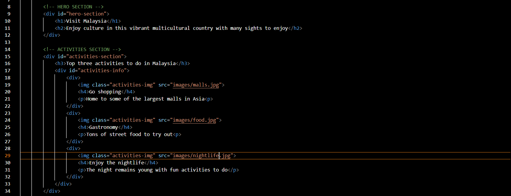
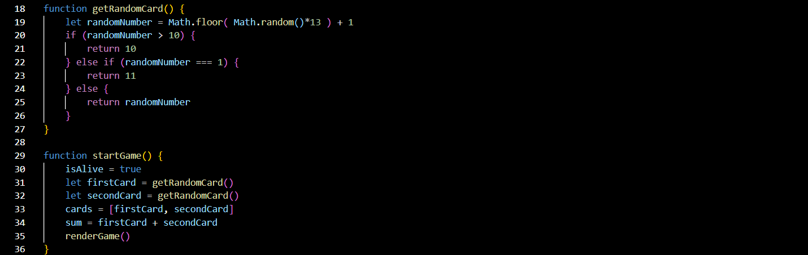

My Frontend Developer Career Path course
After my graduation, while I was in the midst of applying for a full-time job, a friend recommended that I learn coding.
It is a skill highly valued by recruiters and could enhance both my abilities and my resume.
I enrolled in an online course by Scrimba, which focused on teaching the essential building blocks of Frontend development.
The course mainly covered HTML, CSS, and JavaScript.
Learning HTML and CSS
Scrimba offered several free courses, although a monthly subscription was required to claim a certificate.
I decided to start with the free HTML and CSS course, which introduced me to the basics.
Having never learned coding before, I was surprised by how easy it was to start writing my first few lines of code.
Throughout the course, I was assigned several solo projects. These included building a personal website where I listed my favorite things and key interests,
creating a business card that used divs and flex displays to align items horizontally within a container,
and designing a "Visit Home" website to showcase the many interesting aspects of my home country.

These projects allowed me to showcase the knowledge I had gained throughout the course. While my work was not as polished as that of a professional Frontend developer,
it represented invaluable experience that I was proud of. After completing the free course,
I decided to invest in my learning by subscribing to the paid Frontend Developer Career Path course.
Learning Javascript
One of the key skills I gained on the Frontend Career Path was learning a programming language: JavaScript.
It was a language that often left me scratching my head and punching the air in frustration due to its complexity and confusion.
Learning JavaScript was a struggle, but with consistent practice, I was able to grasp its key foundations,
making the learning experience progressively easier. Concepts like booleans, strings, loops, functions, and
callback functions were relatively simple to understand individually. However, applying them in actual projects presented a challenge because
there was rarely one definitive way to solve a problem—only the most efficient way to approach it while building a project.
One of the key projects I built using JavaScript was a blackjack game. This project emphasized connecting buttons to event listeners, which triggered functions.
The game used Math.random() to generate numbers, simulating drawing cards that were added to the player's total.
The game continued until the player either hit blackjack or exceeded 21, ending the round.

Some of the more advanced projects I worked on included building a Twitter spoof application that allowed users to write comments,
upload them to a feed, and interact with posts by liking, retweeting, and adding comments.
Another significant project was a password generator that created random codes using arrays of alphabets and numbers.
Additionally, the course taught us to build a Chrome extension called Lead Saver.
This extension allowed users to save website links directly to Google Chrome and store them locally using the browser's local storage.
To view the code for these projects, feel free to check out my GitHub repository.
Conclusion
As I continue my journey in coding, I look forward to building more advanced projects with DRY (Don’t Repeat Yourself) principles,
improving my portfolio, and showcasing the knowledge I will gain in the future. If I could offer advice to my future self,
it would be to avoid getting lost in the pursuit of big achievements. Instead, focus on mastering the fundamentals of the language,
as they form the foundation of a deeper understanding and proficiency in coding.


 Nov 15, 2024
Nov 15, 2024